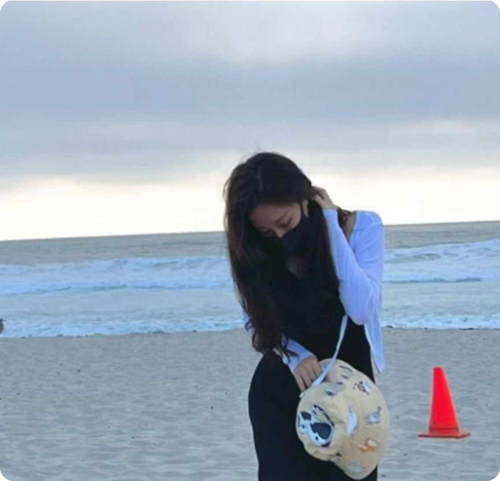

About Me..
My name is xiaoyue wang. I'm a Chinese. My major
is ui/ux design, and I like freedom and fantasy, so
I currently live in California, and I don't have any
company work experience yet. I hope that after
graduation I can work on apps
UX/UI design. Nice to meet you.
I love collaborating with people and assisting to increase work efficiency by providing effective communication with team members.
There is no way to understand users without hearing their stories and pain points. As a UX Designer, I communicate with colleagues and stakeholders, listen to them to figure out a better solution for the problems they are having. I believe understanding what user needs are the most crucial part in my design process.
What am I currently doing?
I'm looking for a way to transfer my technology software skill, media relations, event planning skills, and public relations expertise to a position within media design. I'm fascinated by the trends in UI/UX design
Before becoming a UX Designer
We must recognize that the society is constantly changing and developing, the demand for talent is also more and more high, but there are a lot of their own shortcomings and deficiencies, to adapt to social development, continuously improve the ideological understanding, improve themselves, to correct shortcomings.
Creative outlets: Illustrations & Kawaii doodles
I pay attention to the cultivation of their ability in many aspects, especially in advertisement decoration design professional, mastering the plane advertisement design, VI design, logo design, packaging design, Secretary binding design, display design. Proficient in word, Excel, PowerPoint software, freehand, CorelDRAW and PHotoshop application software and the complete set of VI design,